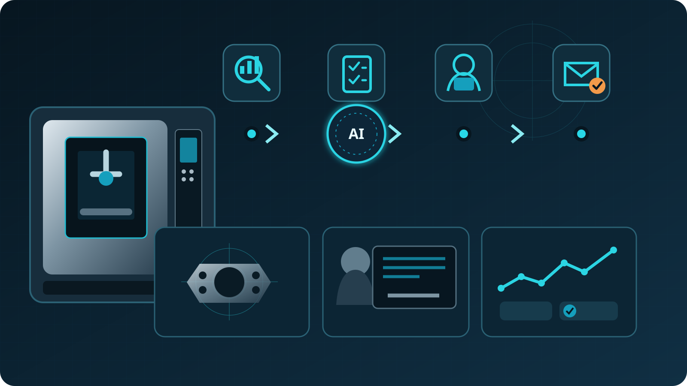
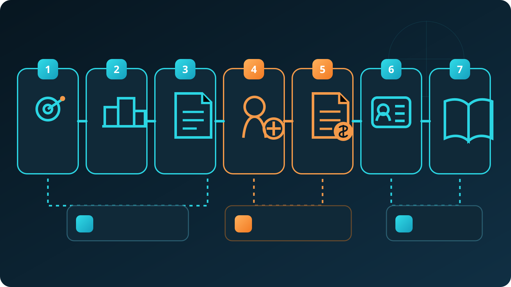

Больше квалифицированных возможностей и быстрее ответ клиенту
AI помогает STOCH усиливать продажи: находить спрос раньше, готовить качественные запросы для инженеров и контролировать развитие сделок.

Market Signals
Выявление предприятий с реальной причиной для контакта.
RFQ Acceleration
Подготовка структурированного запроса для инженерной команды.
CRM Visibility
Контроль владельца, следующего шага и результата.
AI-коммерческий контур роста

Рыночный сигнал → предприятие → RFQ/ТЗ → инженерная проверка → предложение → CRM → знания.
Краткая презентация решения
Раздел презентации и подробная пояснительная записка подключаются в следующем production-слое сайта.